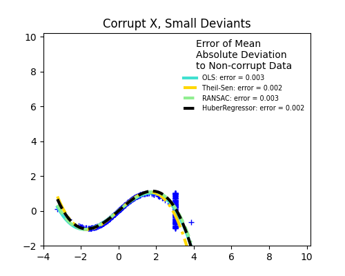
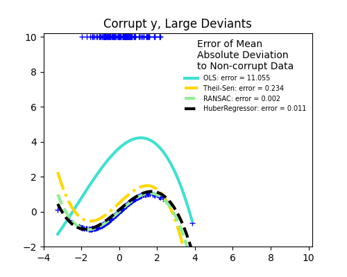

Note
Go to the end to download the full example code or to run this example in your browser via Binder
Robust linear estimator fitting¶
Here a sine function is fit with a polynomial of order 3, for values close to zero.
Robust fitting is demoed in different situations:
No measurement errors, only modelling errors (fitting a sine with a polynomial)
Measurement errors in X
Measurement errors in y
The median absolute deviation to non corrupt new data is used to judge the quality of the prediction.
What we can see that:
RANSAC is good for strong outliers in the y direction
TheilSen is good for small outliers, both in direction X and y, but has a break point above which it performs worse than OLS.
The scores of HuberRegressor may not be compared directly to both TheilSen and RANSAC because it does not attempt to completely filter the outliers but lessen their effect.
- 

- 
import numpy as np
from matplotlib import pyplot as plt
from sklearn.linear_model import (
HuberRegressor,
LinearRegression,
RANSACRegressor,
TheilSenRegressor,
)
from sklearn.metrics import mean_squared_error
from sklearn.pipeline import make_pipeline
from sklearn.preprocessing import PolynomialFeatures
np.random.seed(42)
X = np.random.normal(size=400)
y = np.sin(X)
# Make sure that it X is 2D
X = X[:, np.newaxis]
X_test = np.random.normal(size=200)
y_test = np.sin(X_test)
X_test = X_test[:, np.newaxis]
y_errors = y.copy()
y_errors[::3] = 3
X_errors = X.copy()
X_errors[::3] = 3
y_errors_large = y.copy()
y_errors_large[::3] = 10
X_errors_large = X.copy()
X_errors_large[::3] = 10
estimators = [
("OLS", LinearRegression()),
("Theil-Sen", TheilSenRegressor(random_state=42)),
("RANSAC", RANSACRegressor(random_state=42)),
("HuberRegressor", HuberRegressor()),
]
colors = {
"OLS": "turquoise",
"Theil-Sen": "gold",
"RANSAC": "lightgreen",
"HuberRegressor": "black",
}
linestyle = {"OLS": "-", "Theil-Sen": "-.", "RANSAC": "--", "HuberRegressor": "--"}
lw = 3
x_plot = np.linspace(X.min(), X.max())
for title, this_X, this_y in [
("Modeling Errors Only", X, y),
("Corrupt X, Small Deviants", X_errors, y),
("Corrupt y, Small Deviants", X, y_errors),
("Corrupt X, Large Deviants", X_errors_large, y),
("Corrupt y, Large Deviants", X, y_errors_large),
]:
plt.figure(figsize=(5, 4))
plt.plot(this_X[:, 0], this_y, "b+")
for name, estimator in estimators:
model = make_pipeline(PolynomialFeatures(3), estimator)
model.fit(this_X, this_y)
mse = mean_squared_error(model.predict(X_test), y_test)
y_plot = model.predict(x_plot[:, np.newaxis])
plt.plot(
x_plot,
y_plot,
color=colors[name],
linestyle=linestyle[name],
linewidth=lw,
label="%s: error = %.3f" % (name, mse),
)
legend_title = "Error of Mean\nAbsolute Deviation\nto Non-corrupt Data"
legend = plt.legend(
loc="upper right", frameon=False, title=legend_title, prop=dict(size="x-small")
)
plt.xlim(-4, 10.2)
plt.ylim(-2, 10.2)
plt.title(title)
plt.show()
Total running time of the script: (0 minutes 1.425 seconds)